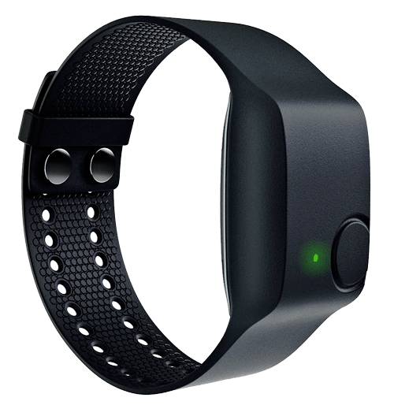
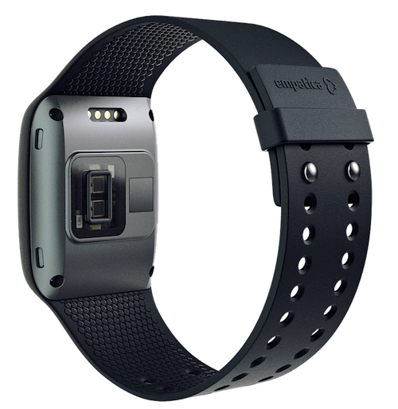
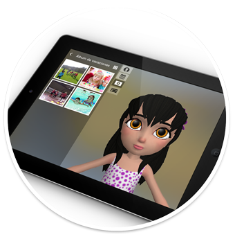

The aim of the project is to build assistant applications targeted to autistic people, their parents and therapists to help autistic people to handle unexpected situations on a daily basis more effectively, hence facilitating their integration in the society.
Autism Spectrum Disorders (ASDs) are associated with intellectual capacity ranging from subtle comprehension of problems or limited social function to severe disabilities. Children with ASD show behavioural and emotional disorders; they have difficulty recognising emotional changes and in organising the dimensions of time and space. These disorders create unusual behaviours that hinder autistic children integration in the society
The project make use of solid know-how on autism and state-of-the-art machine learning, big data techniques, virtual assistants, and biometrical technologies. Specifically, we use (1) wearable technologies to gather information regarding children activities, (2) process the information with machine learning algorithms to detect and anticipate behaviors, and, finally, (3) mediate the communication through a Virtual Assistant able to speak with the child.
Biometrical data has been acquired using the Empatica E4 Wristband, a wearable wristband specially designed for medical research.
The Empatica E4 Wristband has different kinds of sensors: accelerometer, skin temperature sensor, photoplethysmography (PPG) sensor and electrodermal activity (EDA) sensor. The photoplethysmography sensor measures Blood Volume Pulse (BVP), from which heart rate, heart rate variability (HRV), and other cardiovascular features may be derived.
 A-MATE classifier combines Time Series Analysis with classification algorithms to automatically recognize 10 behaviours.
The statistical features used are the following: mean, standard deviation, variance, correlation between axis, energy, inter-quartile range (IQR), mean absolute deviation (MAD) and root-mean square (RMS). This makes a total of 24 features if using one wristband or 48 features if using both wristbands.
The A-MATE activity recognition module is connected to a virtual assistant designed to interact with children with ASD. A transitional object - the Virtual Assistant - can improve the children engagement.
Experiments were conducted with the collaboration of Fundación Planeta Imaginario. Specifically, we recorded 72 hours of data from 24 real therapy sessions involving 3 different children. For each therapy session, all the activities and behaviors were annotated by an observer using an application specially designed for this purpose. 10 different types of activities were collected in each session with a mean of annotations per session of 350.
Two different contexts are analyzed: WORKING and REST. The WORKING context is defined as the period of time when the kid and the therapist are working together in some unit. The REST context is defined as the period of time after finishing a WORKING time, in which the kid, either alone or accompanied by the therapist, engage in an activity which is used as reinforcement.
We are dealing with the recognition of different motor activities such as: RUN, WALK, SWING, PLACE-TOKEN, MOVE, DOWNTIME.
Additionally, we are also annotating therapists instructions and child reactions to these instructions. We have used annotations such as: DEMAND, REDIRECTION, REINFORCMENT, COMPLAIN, AUTO-ESTIMULATION, ECHOLALIA.
Desenvolupament d’una eina de Registre i anàlisi de dades en dispositius wearable:
Aplicació en el context de desintoxicació de pacients drogodependents.
Memòria del Projecte de Fi de Carrera d'Enginyeria Informàtica de la UAB realitzat per Albert Xicola Botifoll.
IIIA-CSIC
Lissette Lemus: lissette@iiia.csic.es
Tlf: +34 935809570